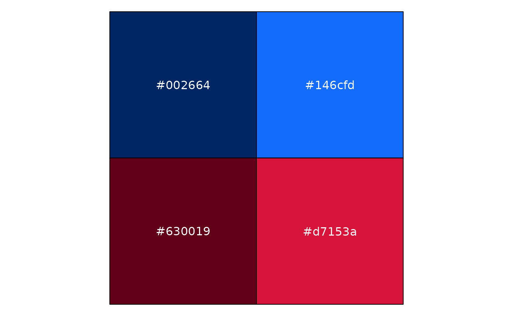
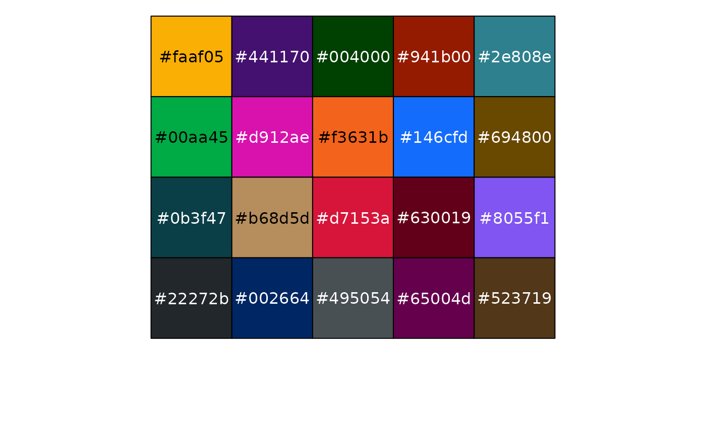
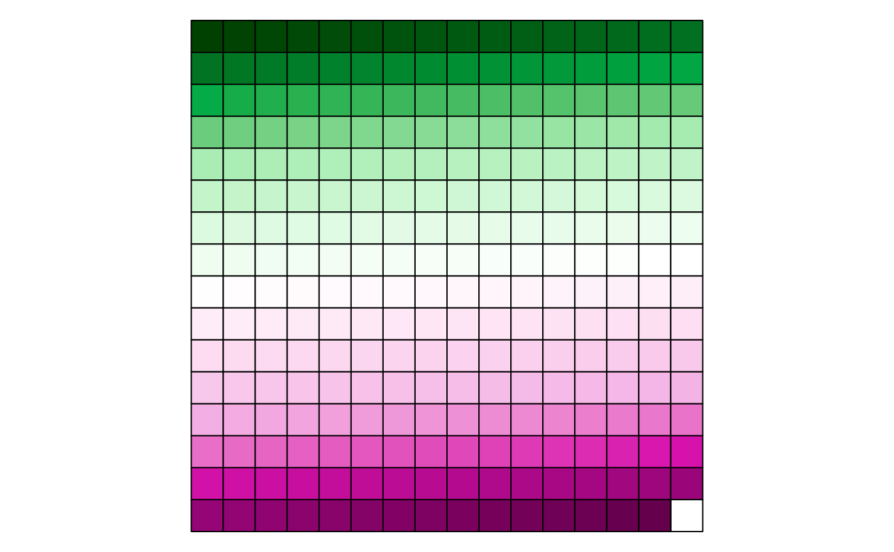
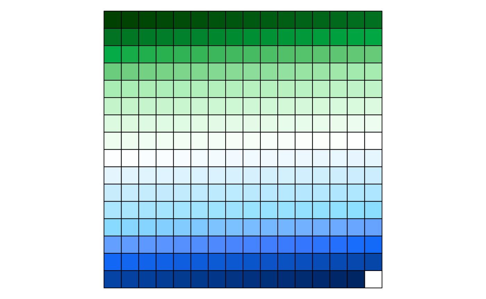

Fonts
The NSW Government typeface is Public Sans. Recommendations:
- Install the font on your computer. This package will attempt to register an embedded copy of the font so that it can be used even without installing the font first.
- If possible you should use a graphics device that supports modern
features such as
ragg::agg_png(). These devices should be used by default by RStudio if {ragg} is installed. - If using HTML output (such as for interactive plots of tables), ensure that the document loads Public Sans from Google Fonts (see below).
Theme for ggplot2
theme_nsw() sets default fonts, styles, and colour
palettes for plots. You can set the theme globally with
ggplot2::set_theme() or add it to an individual plot. If
using any global options like
options(nswtheme.colour_theme = "aboriginal"), make sure to
do this before setting the theme.
See vignette("cookbook") for some examples of using the
theme.
Colours
The NSW palettes are designed around two grids consisting of colour columns and tonal rows. Guidelines for charts suggest techniques for ensuring good contrast so that your charts are accessible.
Individual colours are available by name,
e.g. nsw_colours$blue_01.
Grid-based method
To access colours using the grid system, use pal_nsw().
We can visualise the colours with a utility from the scales package:

This gave us the first two tones of blue followed by the first two
tones of red. Importantly, pal_nsw() always provides a
discrete colour palette.
To use that with ggplot as a discrete colour scale, you can use:
scale_colour_discrete(palette = pal_nsw(hue = c("blue", "red"), tone = 1:2))or scale_fill_discrete() to set the fill scale. In case
you need a continuous scale, ggplot will automatically interpolate the
colours:
scale_colour_continuous(palette = pal_nsw(hue = "blue"))Flexible palettes
Instead of working directly with the grid, you can instead use
pal_waratah(). Specify the pattern of your data and you
will get a reasonable discrete or continous scale. Note that this makes
it harder to follow the chat recommendations mentioned above, but it can
be more convenient for scientific data visualisation.
For qualitative data, a mix of tonal rows 1 and 2 are chosen to avoid overly-similar colours:
pal_waratah("qual") |> scales::show_col()
There are also palettes for sequential and diverging continuous data that allow a choice of the base hue:
pal_waratah("div", hue = "green") |> scales::show_col(labels = FALSE)
Because pal_waratah() considers colour similarity, you
can request that it also take into account colour vision disorders:
pal_waratah("div", hue = "green", cvd = TRUE) |> scales::show_col(labels = FALSE)
To make that choice globally, set:
options(nswtheme.cvd = TRUE)Colour themes
Colour palettes in nswtheme allow a variant to be specified,
including the default variant = "base" and the Aboriginal
palette variant = "aboriginal". See pal_nsw()
for details.
NSW Government logo
The logo is included in PNG format:
library(magick)
#> Linking to ImageMagick 6.9.12.98
#> Enabled features: fontconfig, freetype, fftw, heic, lcms, pango, raw, webp, x11
#> Disabled features: cairo, ghostscript, rsvg
#> Using 4 threads
image_path <- system.file(
"images",
"nsw-gov-logo-primary.png",
package = "nswtheme"
)
image_read(image_path)